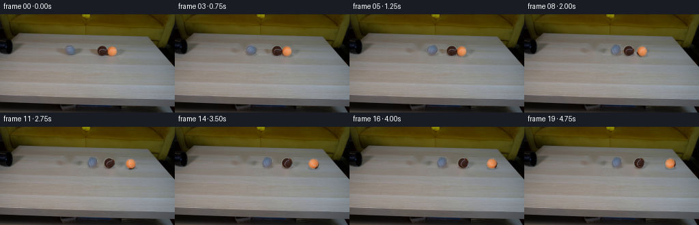
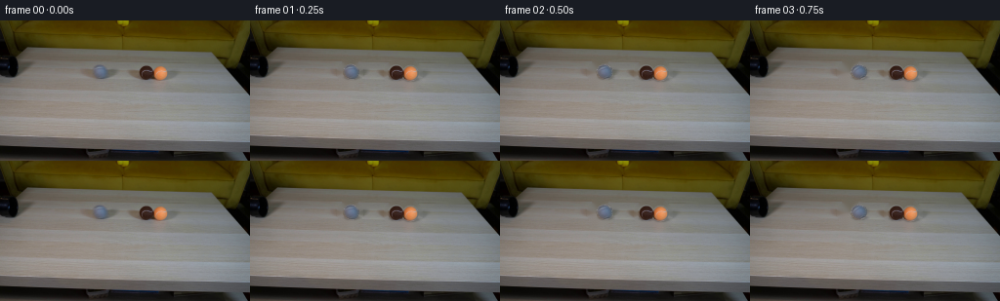

CODING AGENTS AS PIXEL WORLD MODELS
traex/GPT-5.6-Sol · 0029
点击播放 · 原生 RGB 像素
逐轮保存的候选
回放视频、检查图与代码变化。
每份候选均可单独播放。实际图片检查记录在下方工具轨迹中。
候选 01播放与检查图
点击播放 · 原生 RGB 像素


展开代码变化
--- 上一保存版本
+++ 本次保存版本
@@ -0,0 +1,154 @@
+"""Generate the requested locked-off tennis-ball collision video.
+
+The photographed frame is retained as the scene plate. The three balls are
+lifted from it with antialiased mattes, the small vacated regions of tabletop
+are reconstructed, and their motion is generated analytically. This keeps
+all lighting, perspective, pipe, table, and background detail from the source.
+"""
+from pathlib import Path
+import numpy as np
+import cv2
+from PIL import Image
+import artifact_io
+
+CASE_DIR = Path(__file__).resolve().parent
+W, H = 256, 144
+
+
+def soft_ellipse(cx, cy, rx, ry, softness=0.75):
+ """An antialiased ellipse alpha mask in full-frame coordinates."""
+ yy, xx = np.mgrid[0:H, 0:W].astype(np.float32)
+ # Approximate signed distance in pixels, positive toward ellipse interior.
+ q = 1.0 - np.sqrt(((xx-cx)/rx)**2 + ((yy-cy)/ry)**2)
+ dist = q * min(rx, ry)
+ return np.clip(dist / softness + 0.5, 0.0, 1.0).astype(np.float32)
+
+
+def premult_warp(rgb, alpha, cx, cy, nx, ny, angle=0.0, sx=1.0, sy=1.0):
+ """Move one source ball, resampling premultiplied color to avoid halos."""
+ # Rotation is deliberately subtle: tennis-ball felt markings turn while
+ # the external photographic shadow is rendered separately.
+ a = np.deg2rad(angle)
+ ca, sa = np.cos(a), np.sin(a)
+ # Forward transform around source center, then translation.
+ M = np.array([[sx*ca, -sy*sa, nx - sx*ca*cx + sy*sa*cy],
+ [sx*sa, sy*ca, ny - sx*sa*cx - sy*ca*cy]], np.float32)
+ wa = cv2.warpAffine(alpha, M, (W, H), flags=cv2.INTER_LANCZOS4,
+ borderMode=cv2.BORDER_CONSTANT, borderValue=0)
+ pm = rgb.astype(np.float32) * alpha[..., None]
+ wp = cv2.warpAffine(pm, M, (W, H), flags=cv2.INTER_LANCZOS4,
+ borderMode=cv2.BORDER_CONSTANT, borderValue=0)
+ # Clip Lanczos ringing and recover unassociated RGB.
+ wa = np.clip(wa, 0.0, 1.0)
+ out = np.zeros_like(wp)
+ good = wa > 1e-4
+ out[good] = wp[good] / wa[good, None]
+ return np.clip(out, 0, 255), wa
+
+
+def add_shadow(frame, cx, cy, radius, strength=0.22):
+ """Soft contact/ambient shadow on the tabletop under a ball."""
+ layer = np.zeros((H, W), np.float32)
+ # Shadow falls slightly right/down, matching the source illumination.
+ cv2.ellipse(layer, (int(round(cx+1.0)), int(round(cy+radius*0.73))),
+ (int(round(radius*0.92)), max(1, int(round(radius*0.25)))),
+ 0, 0, 360, float(strength), -1, cv2.LINE_AA)
+ layer = cv2.GaussianBlur(layer, (0, 0), sigmaX=1.25, sigmaY=0.65)
+ frame *= (1.0 - layer[..., None])
+
+
+def composite(frame, color, alpha):
+ frame *= (1.0 - alpha[..., None])
+ frame += color * alpha[..., None]
+
+
+def positions(frame_index):
+ """Centers from a simple equal-object impact followed by rolling drag."""
+ # The grey ball emerges already in the source frame and crosses the clear
+ # tabletop at a nearly constant rolling speed. Contact occurs at frame 7.
+ grey_track = [102.0, 103.0, 106.5, 111.0, 115.5, 120.5, 126.0, 132.0]
+ if frame_index <= 7:
+ gx = grey_track[frame_index]
+ bx, ox = 149.0, 164.0
+ else:
+ u = frame_index - 7.0
+ # Grey compresses/slows at contact. Momentum is passed through the
+ # touching pair; both colored balls roll right and gradually lose speed.
+ gx = 132.0 + 3.0 * (1.0 - np.exp(-0.75*u))
+ bx = 149.0 + 22.0 * (1.0 - np.exp(-0.155*u))
+ ox = 164.0 + 58.0 * (1.0 - np.exp(-0.155*u))
+ return gx, bx, ox
+
+
+def make_video():
+ source = np.asarray(Image.open(CASE_DIR / "first_frame.png").convert("RGB"),
+ dtype=np.uint8)
+ assert source.shape == (H, W, 3)
+
+ # Centers and silhouette sizes measured from the supplied frame.
+ centers = [(102.0, 52.2), (149.0, 53.0), (164.0, 53.5)]
+ radii = [(8.6, 8.2), (8.5, 8.5), (8.4, 8.4)]
+ mattes = [soft_ellipse(cx, cy, rx, ry, 0.62)
+ for (cx, cy), (rx, ry) in zip(centers, radii)]
+
+ # Remove balls and their original contact shadows from the otherwise static
+ # plate. A modest dilation supplies clean boundary samples to Telea inpaint.
+ removal = np.zeros((H, W), np.uint8)
+ for (cx, cy), (rx, ry) in zip(centers, radii):
+ cv2.ellipse(removal, (round(cx), round(cy+0.7)),
+ (round(rx+2.0), round(ry+2.4)), 0, 0, 360, 255, -1,
+ cv2.LINE_AA)
+ removal = cv2.dilate(removal, np.ones((3, 3), np.uint8), iterations=1)
+ plate = cv2.inpaint(source, removal, 3.0, cv2.INPAINT_TELEA).astype(np.float32)
+
+ frames = [source.copy()] # Contract: frame 00 is byte-for-byte identical.
+ prev = positions(0)
+ for i in range(1, 20):
+ gx, bx, ox = positions(i)
+ now = (gx, bx, ox)
+ frame = plate.copy()
+
+ # Shadows are separate from rotating object textures and remain aligned
+ # to the fixed overhead light. Draw rear/right object first at contact.
+ add_shadow(frame, ox, centers[2][1], radii[2][0], 0.19)
+ add_shadow(frame, bx, centers[1][1], radii[1][0], 0.21)
+ add_shadow(frame, gx, centers[0][1], radii[0][0], 0.20)
+
+ layers = []
+ for k, nx in enumerate(now):
+ cx, cy = centers[k]
+ dx = nx - cx
+ # Screen-space rolling angle, restrained because rotating the whole
+ # tiny photographic texture too strongly would rotate its highlight.
+ angle = -0.48 * np.degrees(dx / radii[k][0])
+ sx = sy = 1.0
+ if i == 7 and k in (0, 1): # one-frame elastic contact deformation
+ sx, sy = 0.96, 1.025
+ color, alpha = premult_warp(source, mattes[k], cx, cy,
+ nx, cy, angle, sx, sy)
+ # Sub-pixel softness from a finite shutter only for the fastest ball.
+ speed = abs(now[k] - prev[k])
+ if speed > 6.0:
+ sig = min(0.42, (speed-6.0)*0.07)
+ pa = color * alpha[..., None]
+ alpha = cv2.GaussianBlur(alpha, (0, 0), sigmaX=sig, sigmaY=0.10)
+ pa = cv2.GaussianBlur(pa, (0, 0), sigmaX=sig, sigmaY=0.10)
+ good = alpha > 1e-4
+ color[:] = 0
+ color[good] = pa[good] / alpha[good, None]
+ layers.append((color, np.clip(alpha, 0, 1)))
+
+ # Orange is slightly farther from camera in the original overlap.
+ composite(frame, *layers[2])
+ composite(frame, *layers[1])
+ composite(frame, *layers[0])
+ frames.append(np.clip(np.rint(frame), 0, 255).astype(np.uint8))
+ prev = now
+
+ return np.stack(frames, axis=0)
+
+
+if __name__ == "__main__":
+ frames = make_video()
+ assert frames.dtype == np.uint8 and frames.shape == (20, 144, 256, 3)
+ artifact_io.save(frames, CASE_DIR)
可观测工具轨迹
实际执行的命令与返回图片。
命令 1exit 0
/bin/bash -lc "ls -la && printf '\\n--- prompt.txt ---\\n' && cat prompt.txt && printf '\\n--- GENERATION_RULES.md ---\\n' && cat GENERATION_RULES.md"
命令 2exit 0
/bin/bash -lc "python3 - <<'PY'
from PIL import Image
import numpy as np
im=np.array(Image.open('first_frame.png').convert('RGB'))
print(im.shape, im.min(), im.max())
# row/column mean and ranges
for y in [0,10,20,30,40,50,60,70,80,90,100,110,120,130,143]:
a=im[y]; print('row',y,'mean',a.mean(0).round(1),'min',a.min(0),'max',a.max(0))
# quantized dominant colors
q=(im//16)*16
u,c=np.unique(q.reshape(-1,3),axis=0,return_counts=True)
for i in np.argsort(c)[-20:][::-1]: print(c[i],u[i])
PY"命令 3exit 0
/bin/bash -lc "cat > .tmp/analyze.py <<'PY'
from PIL import Image
import numpy as np, cv2
im=np.array(Image.open('first_frame.png').convert('RGB'))
# summaries per 8x8 block: hue symbol if saturated else luminance
for sy in [4,6]:
print('\\nscale',sy)
for y in range(0,144,sy):
s=''
for x in range(0,256,sy):
a=im[y:y+sy,x:x+sy].reshape(-1,3).mean(0); r,g,b=a; d=max(a)-min(a); lum=a.mean()
if d>25 and r>g*1.12 and g>b*1.2: c='O' if r>110 else 'b'
elif d>20 and g>r*1.1: c='G'
elif lum<25:c='#'
elif lum<50:c='@'
elif lum<75:c='8'
elif lum<100:c='o'
elif lum<125:c='*'
elif lum<150:c='.'
elif lum<180:c='-'
else:c=' '
s+=c
print(s)
# components dark on central scene and red/orange
for name,mask in {
'dark': im.mean(2)<40,
'orange':(im[:,:,0]>100)&(im[:,:,0]>im[:,:,1]*1.3)&(im[:,:,1]>im[:,:,2]*1.3),
'brown':(im[:,:,0]>70)&(im[:,:,0]>im[:,:,1]*1.1)&(im[:,:,1]>im[:,:,2]*1.3),
'grayball?':(im[:,:,0]>110)&(np.max(im,2)-np.min(im,2)<25)&(np.indices(im.shape[:2])[0]<80),
}.items():
n,l,st,cen=cv2.connectedComponentsWithStats(mask.astype('uint8'))
print('\\n',name)
for i in np.argsort(st[1:,4])[-15:][::-1]+1:
x,y,w,h,a=st[i];
if a>5: print(a,(x,y,w,h),cen[i])
PY
python3 .tmp/analyze.py"命令 4exit 0
/bin/bash -lc "python3 - <<'PY'
from PIL import Image
import numpy as np
im=np.array(Image.open('first_frame.png').convert('RGB'))
# print 1-char classification crop x60:185 y35:75 every 2px
for y in range(34,76,2):
s=''
for x in range(50,190,2):
a=im[y:y+2,x:x+2].reshape(-1,3).mean(0); r,g,b=a; mx=max(a);mn=min(a); d=mx-mn; L=a.mean()
if r>g*1.3 and r>b*1.8 and r>100:c='O'
elif g>r*1.15 and g>b*1.1 and g>70:c='G'
elif b>r*1.15 and b>g*1.1:c='B'
elif L<15:c='#'
elif L<30:c='@'
elif L<50:c='8'
elif L<70:c='o'
elif L<90:c='*'
elif L<110:c='.'
elif L<130:c='-'
elif L<150:c='+'
elif L<180:c=' '
else:c='W'
s+=c
print(f'{y:3}',s)
PY"命令 5exit 0
/bin/bash -lc "python3 - <<'PY'
from PIL import Image
import numpy as np, cv2
im=np.array(Image.open('first_frame.png').convert('RGB'))
hsv=cv2.cvtColor(im,cv2.COLOR_RGB2HSV)
for y in range(40,70,2):
print('\\ny',y)
for x in range(110,185,5):
a=im[y:y+2,x:x+5].reshape(-1,3).mean(0)
print(f'{x}:{tuple(a.astype(int))}',end=' ')
print()
# sharp differences horizontal x by y
for y in range(40,75):
dx=np.linalg.norm(im[y,1:].astype(float)-im[y,:-1],axis=1)
xs=np.where(dx>40)[0]+1
if len(xs):print(y, xs.tolist())
PY"命令 6exit 0
/bin/bash -lc "python3 - <<'PY'
from PIL import Image
import numpy as np
im=np.array(Image.open('first_frame.png').convert('RGB'))
for y in [42,44,46,48,50,52,54,56,58,60,62,64,66,70,75,80]:
print('\\ny',y)
for x in range(0,145,5):
a=im[y:y+2,x:x+5].reshape(-1,3).mean(0)
print(f'{x}:{tuple(a.astype(int))}',end=' ')
print()
PY"命令 7exit 0
/bin/bash -lc 'cat artifact_io.py'
命令 8exit 0
/bin/bash -lc "cat > generate.py <<'PY'
\"\"\"Generate the requested locked-off tennis-ball collision video.
The photographed frame is retained as the scene plate. The three balls are
lifted from it with antialiased mattes, the small vacated regions of tabletop
are reconstructed, and their motion is generated analytically. This keeps
all lighting, perspective, pipe, table, and background detail from the source.
\"\"\"
from pathlib import Path
import numpy as np
import cv2
from PIL import Image
import artifact_io
CASE_DIR = Path(__file__).resolve().parent
W, H = 256, 144
def soft_ellipse(cx, cy, rx, ry, softness=0.75):
\"\"\"An antialiased ellipse alpha mask in full-frame coordinates.\"\"\"
yy, xx = np.mgrid[0:H, 0:W].astype(np.float32)
# Approximate signed distance in pixels, positive toward ellipse interior.
q = 1.0 - np.sqrt(((xx-cx)/rx)**2 + ((yy-cy)/ry)**2)
dist = q * min(rx, ry)
return np.clip(dist / softness + 0.5, 0.0, 1.0).astype(np.float32)
def premult_warp(rgb, alpha, cx, cy, nx, ny, angle=0.0, sx=1.0, sy=1.0):
\"\"\"Move one source ball, resampling premultiplied color to avoid halos.\"\"\"
# Rotation is deliberately subtle: tennis-ball felt markings turn while
# the external photographic shadow is rendered separately.
a = np.deg2rad(angle)
ca, sa = np.cos(a), np.sin(a)
# Forward transform around source center, then translation.
M = np.array([[sx*ca, -sy*sa, nx - sx*ca*cx + sy*sa*cy],
[sx*sa, sy*ca, ny - sx*sa*cx - sy*ca*cy]], np.float32)
wa = cv2.warpAffine(alpha, M, (W, H), flags=cv2.INTER_LANCZOS4,
borderMode=cv2.BORDER_CONSTANT, borderValue=0)
pm = rgb.astype(np.float32) * alpha[..., None]
wp = cv2.warpAffine(pm, M, (W, H), flags=cv2.INTER_LANCZOS4,
borderMode=cv2.BORDER_CONSTANT, borderValue=0)
# Clip Lanczos ringing and recover unassociated RGB.
wa = np.clip(wa, 0.0, 1.0)
out = np.zeros_like(wp)
good = wa > 1e-4
out[good] = wp[good] / wa[good, None]
return np.clip(out, 0, 255), wa
def add_shadow(frame, cx, cy, radius, strength=0.22):
\"\"\"Soft contact/ambient shadow on the tabletop under a ball.\"\"\"
layer = np.zeros((H, W), np.float32)
# Shadow falls slightly right/down, matching the source illumination.
cv2.ellipse(layer, (int(round(cx+1.0)), int(round(cy+radius*0.73))),
(int(round(radius*0.92)), max(1, int(round(radius*0.25)))),
0, 0, 360, float(strength), -1, cv2.LINE_AA)
layer = cv2.GaussianBlur(layer, (0, 0), sigmaX=1.25, sigmaY=0.65)
frame *= (1.0 - layer[..., None])
def composite(frame, color, alpha):
frame *= (1.0 - alpha[..., None])
frame += color * alpha[..., None]
def positions(frame_index):
\"\"\"Centers from a simple equal-object impact followed by rolling drag.\"\"\"
# The grey ball emerges already in the source frame and crosses the clear
# tabletop at a nearly constant rolling speed. Contact occurs at frame 7.
grey_track = [102.0, 103.0, 106.5, 111.0, 115.5, 120.5, 126.0, 132.0]
if frame_index <= 7:
gx = grey_track[frame_index]
bx, ox = 149.0, 164.0
else:
u = frame_index - 7.0
# Grey compresses/slows at contact. Momentum is passed through the
# touching pair; both colored balls roll right and gradually lose speed.
gx = 132.0 + 3.0 * (1.0 - np.exp(-0.75*u))
bx = 149.0 + 22.0 * (1.0 - np.exp(-0.155*u))
ox = 164.0 + 58.0 * (1.0 - np.exp(-0.155*u))
return gx, bx, ox
def make_video():
source = np.asarray(Image.open(CASE_DIR / \"first_frame.png\").convert(\"RGB\"),
dtype=np.uint8)
assert source.shape == (H, W, 3)
# Centers and silhouette sizes measured from the supplied frame.
centers = [(102.0, 52.2), (149.0, 53.0), (164.0, 53.5)]
radii = [(8.6, 8.2), (8.5, 8.5), (8.4, 8.4)]
mattes = [soft_ellipse(cx, cy, rx, ry, 0.62)
for (cx, cy), (rx, ry) in zip(centers, radii)]
# Remove balls and their original contact shadows from the otherwise static
# plate. A modest dilation supplies clean boundary samples to Telea inpaint.
removal = np.zeros((H, W), np.uint8)
for (cx, cy), (rx, ry) in zip(centers, radii):
cv2.ellipse(removal, (round(cx), round(cy+0.7)),
(round(rx+2.0), round(ry+2.4)), 0, 0, 360, 255, -1,
cv2.LINE_AA)
removal = cv2.dilate(removal, np.ones((3, 3), np.uint8), iterations=1)
plate = cv2.inpaint(source, removal, 3.0, cv2.INPAINT_TELEA).astype(np.float32)
frames = [source.copy()] # Contract: frame 00 is byte-for-byte identical.
prev = positions(0)
for i in range(1, 20):
gx, bx, ox = positions(i)
now = (gx, bx, ox)
frame = plate.copy()
# Shadows are separate from rotating object textures and remain aligned
# to the fixed overhead light. Draw rear/right object first at contact.
add_shadow(frame, ox, centers[2][1], radii[2][0], 0.19)
add_shadow(frame, bx, centers[1][1], radii[1][0], 0.21)
add_shadow(frame, gx, centers[0][1], radii[0][0], 0.20)
layers = []
for k, nx in enumerate(now):
cx, cy = centers[k]
dx = nx - cx
# Screen-space rolling angle, restrained because rotating the whole
# tiny photographic texture too strongly would rotate its highlight.
angle = -0.48 * np.degrees(dx / radii[k][0])
sx = sy = 1.0
if i == 7 and k in (0, 1): # one-frame elastic contact deformation
sx, sy = 0.96, 1.025
color, alpha = premult_warp(source, mattes[k], cx, cy,
nx, cy, angle, sx, sy)
# Sub-pixel softness from a finite shutter only for the fastest ball.
speed = abs(now[k] - prev[k])
if speed > 6.0:
sig = min(0.42, (speed-6.0)*0.07)
pa = color * alpha[..., None]
alpha = cv2.GaussianBlur(alpha, (0, 0), sigmaX=sig, sigmaY=0.10)
pa = cv2.GaussianBlur(pa, (0, 0), sigmaX=sig, sigmaY=0.10)
good = alpha > 1e-4
color[:] = 0
color[good] = pa[good] / alpha[good, None]
layers.append((color, np.clip(alpha, 0, 1)))
# Orange is slightly farther from camera in the original overlap.
composite(frame, *layers[2])
composite(frame, *layers[1])
composite(frame, *layers[0])
frames.append(np.clip(np.rint(frame), 0, 255).astype(np.uint8))
prev = now
return np.stack(frames, axis=0)
if __name__ == \"__main__\":
frames = make_video()
assert frames.dtype == np.uint8 and frames.shape == (20, 144, 256, 3)
artifact_io.save(frames, CASE_DIR)
PY
python3 generate.py
python3 - <<'PY'
from PIL import Image
import numpy as np
z=np.load('pixels.npz')['pixels']
f=np.array(Image.open('first_frame.png').convert('RGB'))
first=np.stack([(z[:,:,0]>>16)&255,(z[:,:,0]>>8)&255,z[:,:,0]&255],-1).astype('uint8')
print('pixels',z.shape,z.dtype,'first identical',np.array_equal(f,first))
print('outputs',len(list(__import__('pathlib').Path('frames').glob('*.png'))))
for i in [0,1,4,7,8,12,19]:
a=np.array(Image.open(f'frames/{i:02}.png'))
print(i, 'changed',np.count_nonzero(np.any(a"'!=f,2)), '"'mean',a.mean().round(3))
PY"保存候选 1 份；完成命令 8 次；可验证图片返回 0 张。原始 API 响应与完整日志保留在本地。